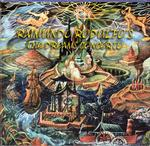

Home Artist links

Raimundo Rodulfo - The Dreams Concerto
| Artist: | Raimundo Rodulfo |
| Title: | The Dream Concerto |
| Label: | self produced |
| Length(s): | 78 minutes |
| Year(s) of release: | 2002 |
| Month of review: | [07/2002] |
Line up
Raimundo Rodulfo - acoustic guitar, classical guitar, electric guitar, mandolin, bass, slide guitar, backing vocals and percussion
Andrés Briceño - acoustic and electronic drums, flugelhorn
Lermit Martínez - keyboards, piano, organ, clavier
César Romano - first and second violins, viola, electric violin
Beatrix Rivas - vocals
Carlos Rodríguez - acoustic bass
Pablo Gil Rodulfo - saxophones
Pedro Castillo - vocals
Alejandro Socorro - acoustic and electronic percussion
Ricardo Furiati - bass, backing vocals
Carlos Orozco - harp
Manuel Rojas - flute
Euro Olivares - maracas
César Hernández - backing vocals
Linda Briceño - flugelhorn
Peter Rodulfo - paintings
Tracks
| | First Movement | 28.17
|
| 1) | Part 1 Suenos | 24.14
|
| 2) | Part 2 Coda Esperanza | 4.03
|
| | Second Movement | 17.18
|
| 3) | Part 1 Matemática Y Arte II | 8.01
|
| 4) | Part 2 Muestro Al Azar | 9.17
|
| | Third Movement | 32.53
|
| 5) | Part 1 Baroque | 15.01
|
| 6) | Part 2 La Gran Epopeya De La Música Y Las Ciencias | 17.52
|
Summary
Following his related Suenos - Dreams album, this is the second works of
Raimundo Rodulfo with an extremely thick booklet (about 38 pages) detailing all
there is to know about the music and the people involved. The music has been
evolving over the last 15 years as the man states in the booklet.
Pedro Castillo you might know from his involvement with Tempano.
The music
The first track, Suenos, is a twenty four minute study opening with very classical
oriented stylings and melodic female, dolorous vocals in the Spanish language.
In the continuation we get some strong guitar playing following the main
theme of the modern symphony (as the writer himself states it), based in
his love for baroque music. Some of the vocal lines are a bit too trite
for my tastes, but the music certainly has its appeal. Although in a way
it has its own definite identity, it combines the European sounds of Focus
and Tull with a more classical approach (say Ekseption), chamber orchestra like
arrangements, some Hackettish guitar playing and the temparement and melancholy
of South America. Most of the time the music is quite accessible and
the music is not what we might call typically progressive, only
sophisticated. Later however, the music enters more into the rock format with
drums and the like. Violins and high pitched guitars (way back in the mix)
continue to reveal a sadness in this track, although halfway the vocals
sound almost hopeful and are quite energetic with good vocal melodies.
Following this the music reaches another guitaristic climax with nods to
old Genesis (yes, again in the guitar work), but also a melodic flute
setting in. I am getting to like this. Time for some more frolic music now,
with a folky feel: violin, flute, dancing acoustics and the like. The
rolling drums are fine here, but the keyboards sound a bit cheesy. It also
seems to me the production at time leaves something to be desired.
The rolling drums continue when also a male vocalist, probably Raimundo himself
(Raimundo later told me this is Tempano's Pedro Castillo),
enters the picture. This part is one of heavily punctuated, but still slow
moving symphonic rock, quite bombastic and climactic, lined with saxophone.
In the final few minutes, some of the strong vocal melodies recur again sung
in a loud emotional fashion, but also revealing that the recording could
have been done better. The song ends with a long climax on guitar.
Notwithstanding some cheesier parts a good attempt at a long epic and one in
which the length of 24 minutes does not stand in the way at all. Esperanza
is a much shorter coda in which Rudolfo wanted to have a more optimistic
antidote to the emotionally rather moody first part. Esperanze is indeed
a frolic tune with plenty of Latin American influences, both in the way
of playing and the instrumentation.
The second movement opens with Matematica Y Arte II, a continuation of the
first part from Rodulfo's first album. This is a rather fast and flashy track,
very progressive sounding, a strong bass presence, and with some abrupt
breaks as well. Instrumental rock of the more fiddly kind, but with a good
groove. For those interested in the mathematics, consult the booklet.
The rhythm section in this track takes on a different guise later on with
the guitar soloing over various complicated percussion patterns. The music
has gone from melodramatic classical inspired to something more claustrophobic
reminiscent of experimentalism in Crimson style, or even more avant-garde.
Quite a step. On the other hand, some of the melodic Suenos themes are still
with us. However, the saxophone gets some heavy duty wringing out, it barely
survives. On track 4, Muestra Al Azar, the experimentation continues and
if you are looking for pointers, look to the great Crim. The music is
often percussive and sparse, with ethereal guitars, and lots of electronic
percussion. The music continues with more fluency and drive, but also some
dull sounding drum computers. And yes the Suenos theme is still with us,
although less overt than earlier.
The third movement consists of the Baroque track, written fifteen years
earlier and La Gran Epopeya De La Música Y Las Ciencias. The first
of these opens nicely with acoustic guitar, later the music gets more frolic
when the somewhat manic chamber orchestra sets in. I am actually not fond
of baroque at all, so most of this music is not really for me, although
admittedly it has its moments. I especially can appreciate the acoustic
guitar playing, but not the stateliness of the harpsichord/chamber orchestra
parts. Fortunately, it is not all like that, because Rodulfo also includes
some more somber modes into the music along the way, for instance around
the seven minute mark. Around the ten minute mark, the music gets a bit too
fiddly, and there is too little fluency. Then however, the music seems to
pick up again. The finale seems to be quite moody with plenty of flute.
The second part of the third movement continues in the same vein (and like
the previous track also features the Suenos theme again, but much more
overt). One could say that the music here is a return to the first track,
and it also includes vocals with intricate arrangements and the clear vocals
of Rivas. The middle part contains some typical classical phrasings as
well as some up tempo progressive rock, but never too rocky. The electric
guitar features quite prominently here. Surprising is the fast guitar playing
evident towards the end, but unfortunately for me the music does not continue
the drive of that part.
Conclusion
For those who like classical music as well a progressive rock, this might
be a concept worthy of attention. Rodulfo really thinks about what he does
and for those who like, the story can be followed in the booklet. Rodulfo
tries to do a lot, but never forces his hand: the music is varied, the second
movement being totally different from the other two, but I had not problems
following it. In the third movement there is a predominance of Hackett
influences combined with the temparement of Latin America. One might also think
of Focus or Ekseption here, classical influences abounding. The second movement
sees us in a more experimental waters with Crimsonesque electronic percussion
and guitars. The third movement sees us back with the classical influences,
and because I am not that fond of baroque music myself, this movement I liked
least. However, if you have no such problems you should soon feel at home with
both the intellecual first part and the more active and varied second part.
The recording was not always great, but do not mar the overal end result which
is packaged in way that ought to discourage cd copiers.
© Jurriaan Hage